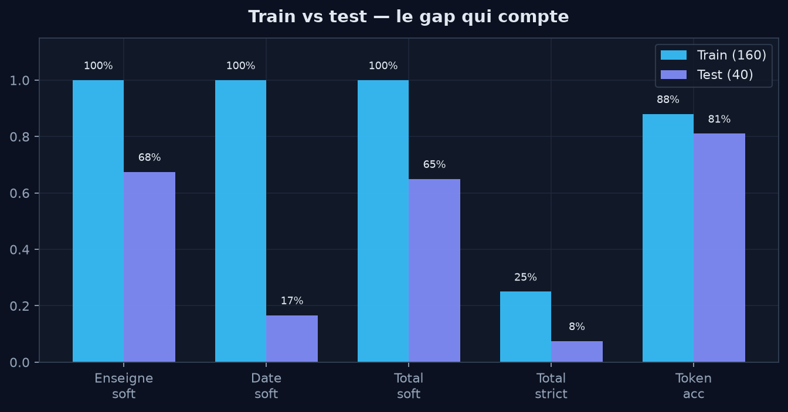
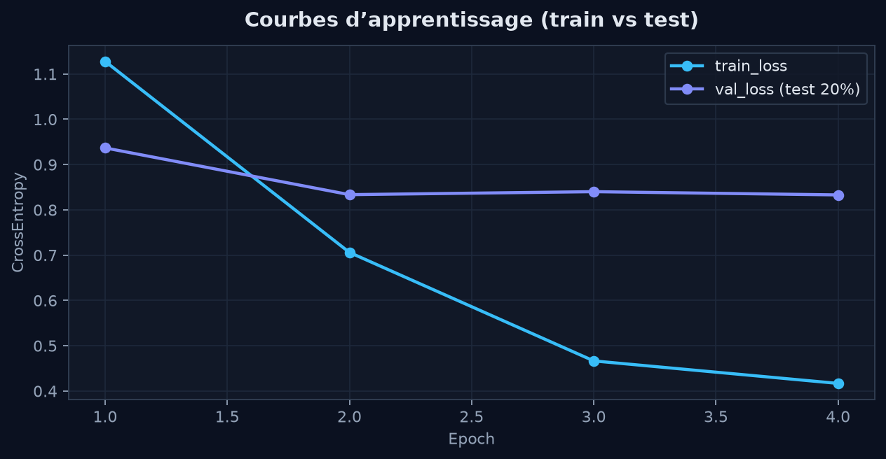
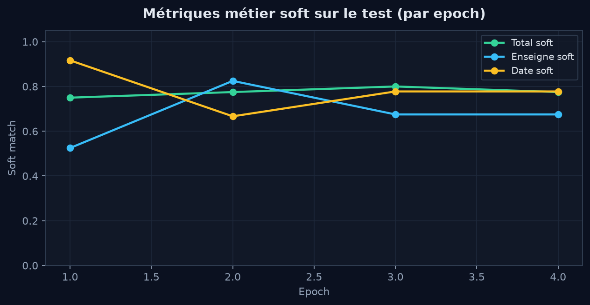
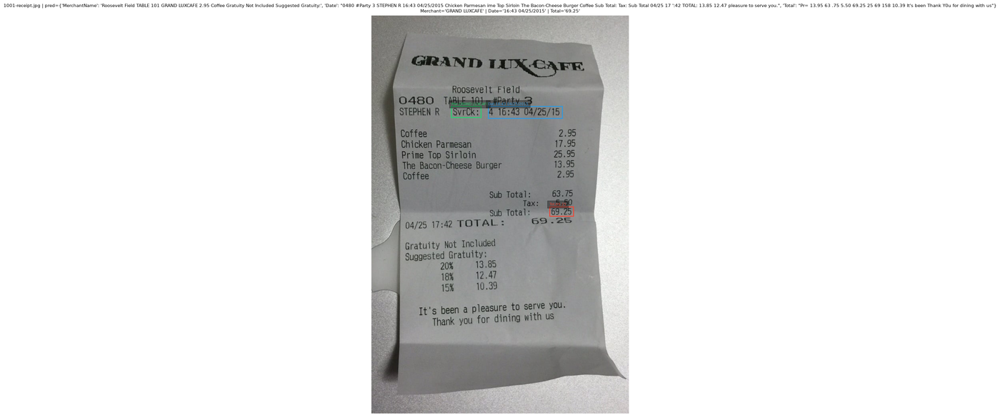

Projets Receipt IE
Projet · information extraction
Extraction d'informations clés sur tickets de caisse
À partir d'images de tickets, récupérer l'enseigne, la date et le montant TTC. Travail inspiré du papier CUTIE : OCR, annotation, CNN sur textes placés en grille, évaluation train/test.
Que veut-on extraire, et pourquoi c'est difficile
On part d'une photo ou d'un scan de ticket. L'OCR donne une liste de fragments de texte avec leurs positions (mots, montants, libellés). Ce n'est pas un tableau propre : la mise en page change d'un commerçant à l'autre.
Les trois informations ciblées ici sont :
- Enseigne (MerchantName) : nom du commerçant
- Date : date imprimée sur le ticket
- Total : montant TTC final (pas le sous-total ni la TVA seule)
La difficulté vient surtout du contexte spatial. Un montant « 12,50 » peut être un prix d'article, une taxe ou le total. Un modèle qui ne regarde que la séquence de mots (approche type NER) ignore où le texte est placé sur la page. C'est précisément le point que CUTIE cherche à corriger.
Le papier CUTIE
CUTIE: Learning to Understand Documents with Convolutional Universal Text Information Extractor (Zhao et al., arXiv:1903.12363) propose d'appliquer un CNN sur des textes déjà reconnus, en les rangeant dans une grille 2D qui conserve leur position relative sur le document.
Idée centrale : chaque cellule de la grille contient un token (ou est vide). Un embedding transforme le texte en vecteur, puis des convolutions (y compris atrous / ASPP dans la variante CUTIE-B) mélangent sémantique et voisinage spatial. La sortie est une étiquette par cellule, comme une segmentation, mais sur une grille clairsemée plutôt que sur des pixels.
Dans ce projet, on reprend l'idée grille + CNN (CUTIE-B simplifié), sur un petit jeu de tickets (~200 images) et trois champs seulement, pour faire tourner et évaluer le pipeline de bout en bout.
Pipeline et choix de labels
Déroulement utiliséé :
-
01
OCR
EasyOCR produit les tokens (texte + boîte) pour chaque image.
-
02
Annotation
Pré-annotation par heuristiques, puis correction manuelle enseigne / date / TTC sur les 200 tickets.
-
03
Grille
Chaque token est placé dans une cellule d'une grille 64×64 selon sa position sur l'image.
-
04
Modèle
CNN CUTIE-B simplifié : classification de chaque cellule, puis agrégation des champs.
Classes par cellule
Chaque case de la grille reçoit une seule classe parmi quatre :
- DontCare : tout ce qui n'est pas un des trois champs cibles (lignes d'articles, TVA, adresse, sous-total, etc.), plus les cellules vides. C'est la classe majoritaire. Sans elle, le modèle serait forcé d'attribuer Merchant / Date / Total à presque tout.
- MerchantName : tokens qui forment l'enseigne
- Date : tokens de la date (sans l'heure si elle est sur une autre ligne)
- Total : tokens du montant TTC retenu
Le déséquilibre DontCare / champs rares impose des poids de classes à l'entraînement. Sinon le modèle peut coller une haute accuracy token en ne prédisant presque que DontCare.
Métriques
Deux lectures par champ, après reconstruction du texte prédit :
- soft : la référence est contenue dans la prédiction (texte en trop toléré)
- strict : égalité après normalisation (minuscules, espaces)
L'accuracy token (bonne classe par cellule) est aussi suivie, mais elle est tirée vers le haut par DontCare. Les métriques par champ (surtout Total soft / strict) sont celles qui comptent pour juger la tâche.
Mesures sur le jeu de test
65%
Total soft (test)
8%
Total strict (test)
68%
Enseigne soft (test)
17%
Date soft (test)




Lecture des résultats
- Soft vs strict Soft 65 % et strict 8 % sur le Total (test) : le montant correct apparaît souvent dans la prédiction, mais avec du texte en trop (lignes voisines). Pour une égalité exacte, le modèle n'est pas assez propre.
- Accuracy token Environ 80 % de cellules bien classées. Ça reste compatible avec un modèle qui rate souvent Date / Total, parce que DontCare remplit la grille.
- Écart train / test Soft à 100 % en train et nettement plus bas en test : le modèle mémorise bien les tickets vus à l'entraînement. Avec 160 images, la généralisation reste limitée, surtout sur la date (17 % soft test).
- Choix du checkpoint Suivre uniquement la loss ou uniquement le soft peut privilégier un modèle trop large (beaucoup de faux positifs). Ici le checkpoint retenu mélange soft des champs et accuracy token.